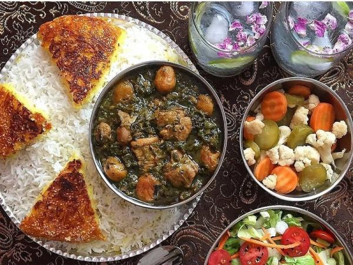

<!DOCTYPE html>
<html lang="en">
<head>
    <meta charset="UTF-8">
    <meta name="viewport" content="width=device-width, initial-scale=1.0">
    <link rel="stylesheet" href="../styles/styles.css">
</head>
<body>
    <header id="header"></header>
    <main>
        <section class="myDishRecipe">
            <!-- <section class="myDishImg">
                              
            </section>
            <section class="recipe">
                <span class="dishType">Stew</span>
                <h2 class="recipeTitle">Ghormeh Sabzi</h2>
                <p class="recipeDesc">A hearty Persian stew made with tender beef, 
                                        yellow split peas, dried limes, and a tomato-based sauce, 
                                        often garnished with crispy fried potatoes.</p>
                <section class="badge">
                    <section class="prepBadge">
                        <span class="emoji">🕑</span>
                        <span class="lbl"></span>
                        <span class="prepTimeBadge">20 min</span>
                    </section>

                    <section class="cookBadge"></section>
                        <span class="emoji">👩‍🍳</span>
                        <spa class="lbl"></spa>
                        <span class="cookTimeBadge">1.20 hours</span>
                    </section>
                    <section class="servBadge"></section>
                        <span class="emoji">👥</span>
                        <span class="lbl"></span>
                        <span class="servingBadge">4 People</span>
                    </section>
                </section>
                <section class="ingrdn">
                <h2 class="ingrdnTitle">Ingredients</h2>
                    <ul class="ingrdnList">
                        <li>500g beef stew meat, cut into cubes</li>
                        <li>1 large onion, finely chopped</li>
                        <li>2 cups fresh parsley, finely chopped</li>
                        <li>1 cup fresh cilantro, finely chopped</li>
                        <li>1 cup fresh fenugreek leaves (or 2 tablespoons dried fenugreek), finely chopped</li>
                        <li>1 cup yellow split peas, rinsed and soaked for at least 30 minutes</li>
                        <li>3-4 dried limes (limoo amani), pierced with a fork</li>
                        <li>2 medium tomatoes, diced</li>
                        <li>3 tablespoons vegetable oil</li>
                        <li>Salt and pepper to taste</li>
                        <li>1 teaspoon turmeric</li>        
                    </ul>
                </section>
                <section class="instruct">
                    <h2 class="instructTitle">Preparation Steps</h2>
                    <ul class="instructList">
                        <li>In a large pot, heat the vegetable oil over medium heat. Add the chopped onions and sauté until golden brown.</li>
                        <li>Add the beef cubes to the pot and cook until they are browned on all sides.</li>
                        <li>Stir in the turmeric, salt, and pepper, and cook for another minute to coat the meat with the spices.</li>
                        <li>Add the chopped parsley, cilantro, and fenugreek leaves to the pot. Cook for about 5-7 minutes until the herbs are wilted and fragrant.</li>
                        <li>Drain the soaked yellow split peas and add them to the pot along with the diced tomatoes and dried limes. Stir everything together.</li>
                        <li>Pour in enough water to cover the ingredients (about 4-5 cups). Bring to a boil, then reduce the heat to low, cover, and let it simmer for about 1-1.5 hours until the meat is tender and the flavors are well combined.</li>   
                    </ul>
                </section>
                <section class="enjoy">
                    <p>Enjoy your meal!</p>
                </section>
            </section> -->
            
        </section> 
    </main> 
    <footer id="footer"></footer>
    <script type="module" src="../scripts/dishRecipe.js"></script>
</body>                             